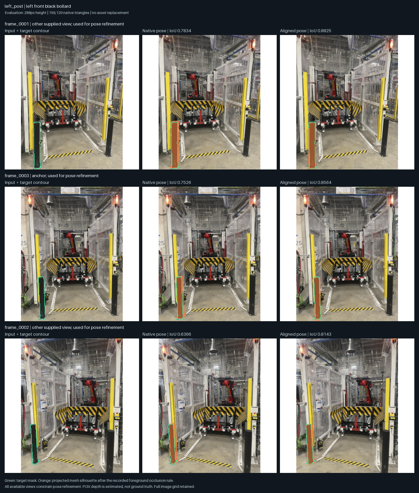
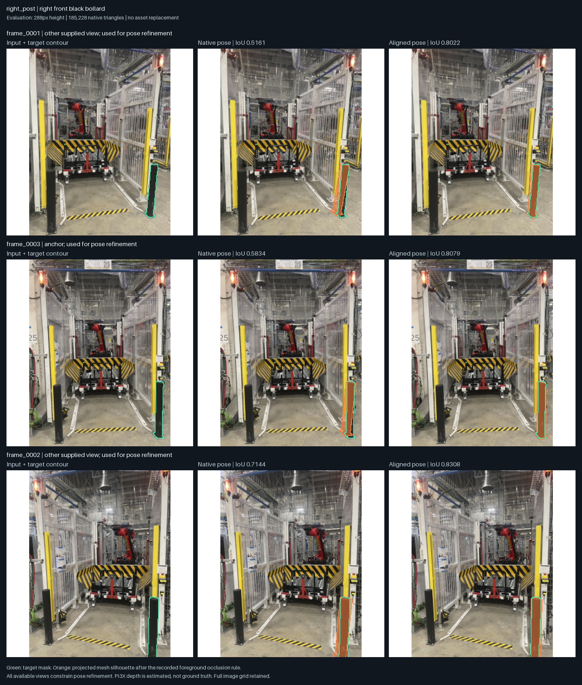
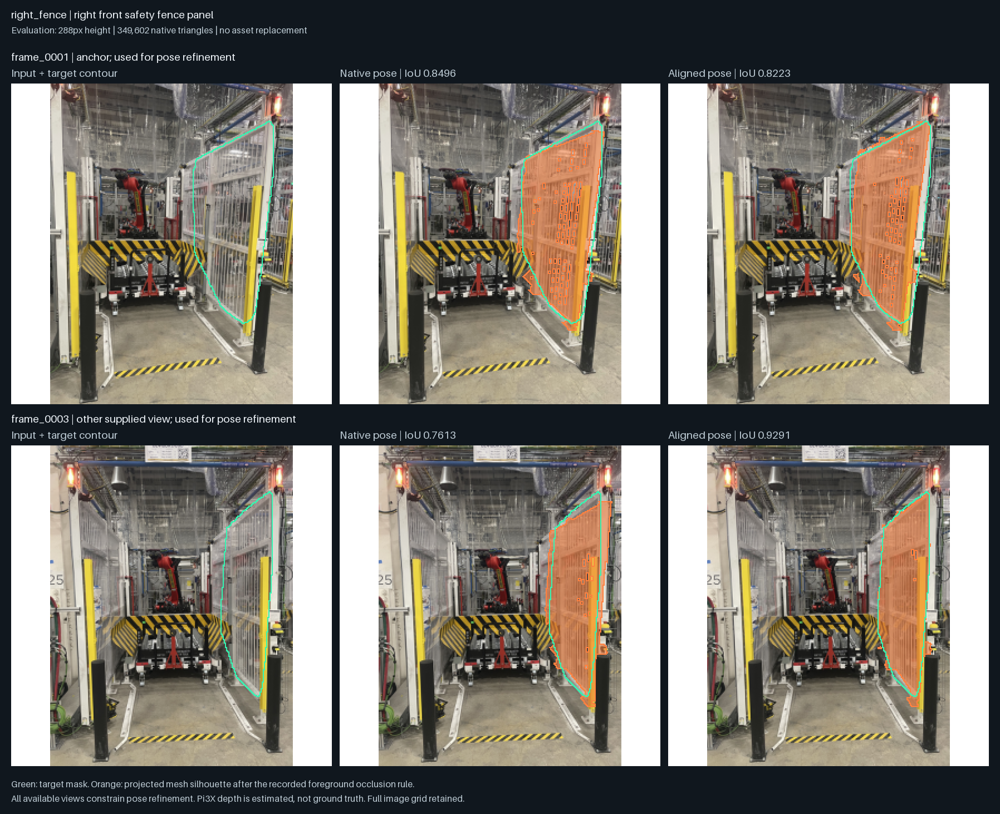
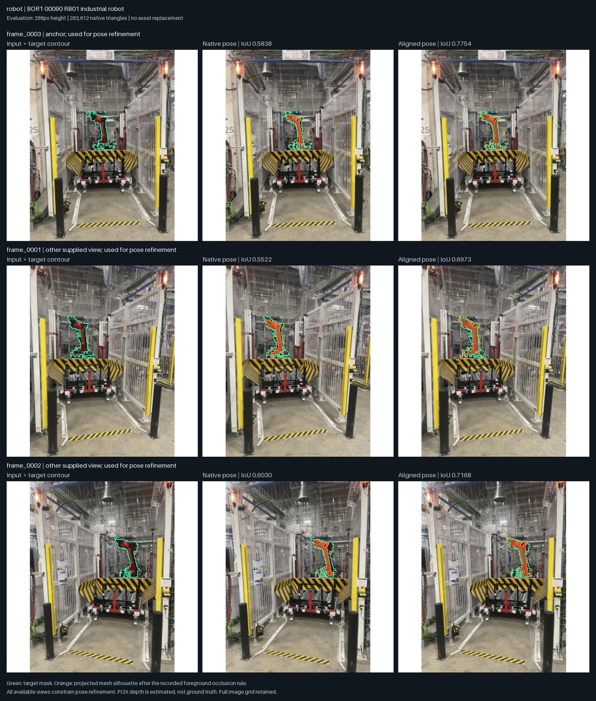
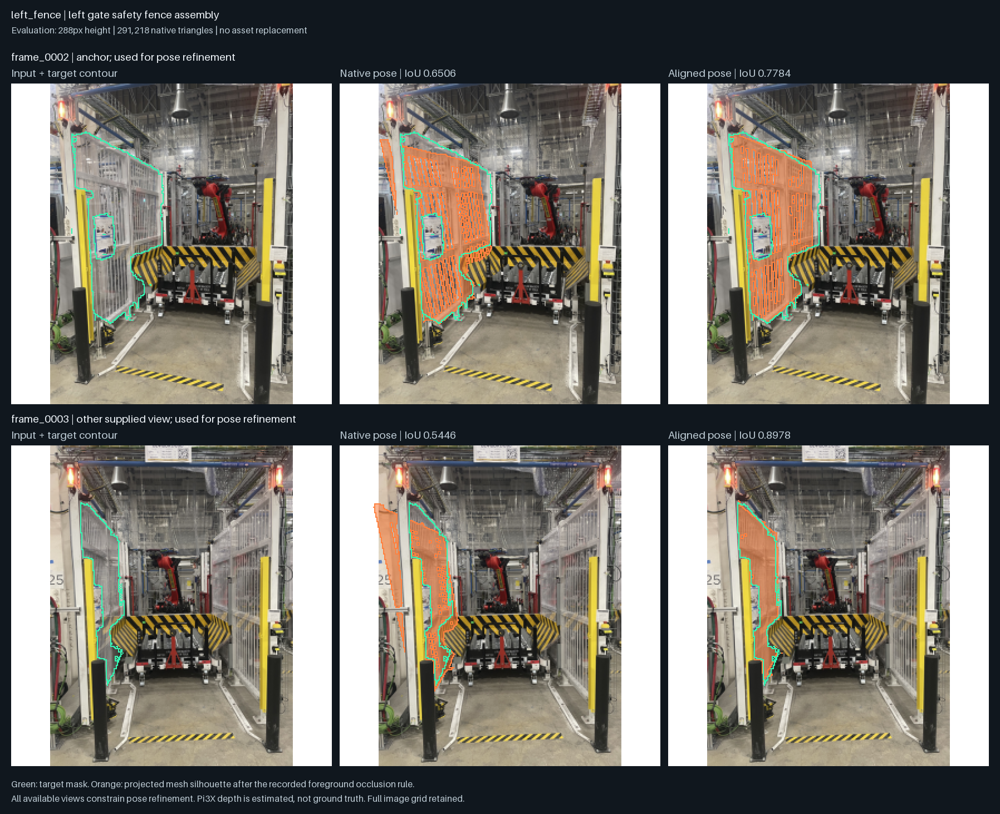
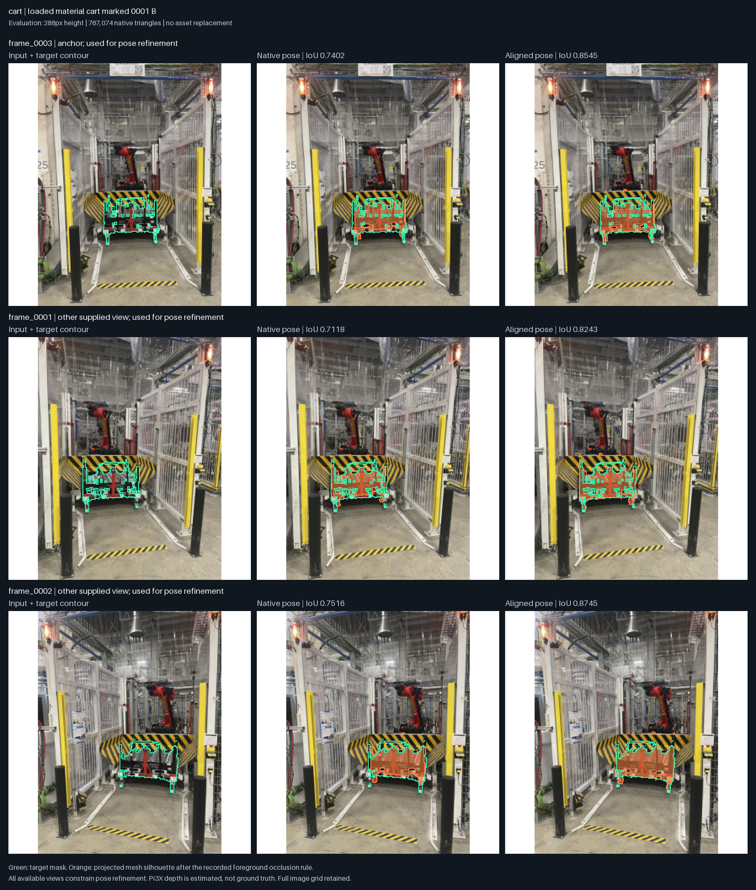
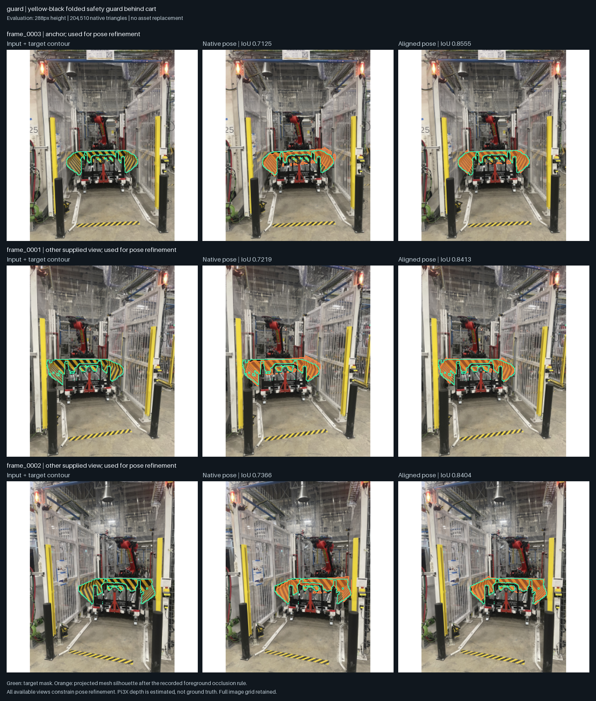
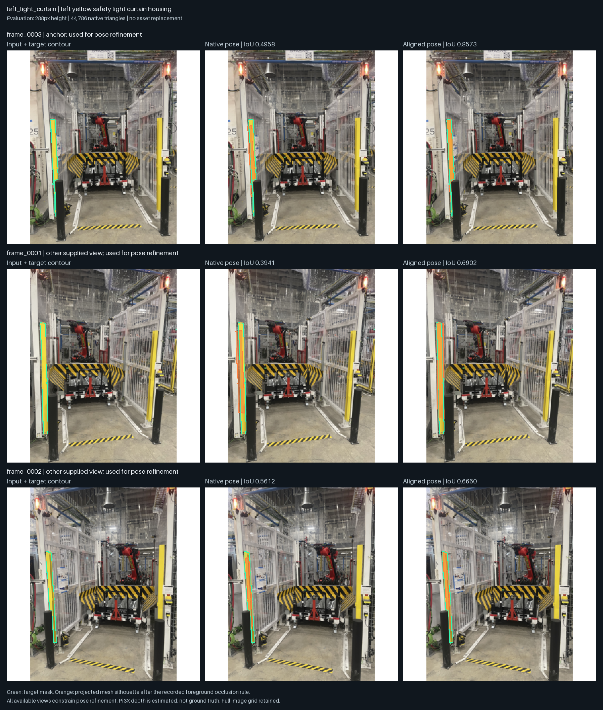
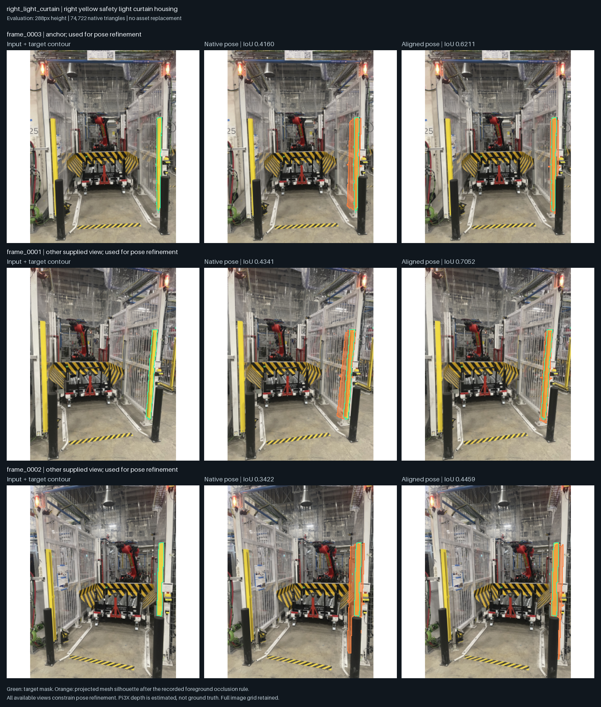

← 返回可编辑 3D同一批照片，同一物体，同一指标
Run：lucida-replica-01
“前”是 RecGen 原生生成的网格和预测摆放；“后”是同一网格经过全部可用对象视图共同约束的局部摆放优化。没有替换物体或修改照片。轮廓距离除以图像高度；深度误差是与 Pi3X 估计深度比较的中位相对误差，不能解释为实测尺寸精度。
“观测表面”只包含照片可见的三角面，便于识别完整资产补全带来的误差。三张照片都参与联合几何，已分割的对象视图都参与摆放优化；本表为输入一致性拟合，不是独立测试集指标。封闭网格仅表示几何拓扑，不证明被遮挡的形状正确。
这是 RecGen 的实际实验；没有运行未公开的 Lucida GizmoAct 策略。资产为静态可编辑网格，机器人关节和物理碰撞尚未验证。
这轮结果能说明什么
三张输入照片得到 9 个生成对象与 1 块观测地面，共 2,359,872 个生成三角面。可在 3D 中选择、隐藏、移动、旋转和缩放对象，切换原图视角，并导出本地编辑。
当前优先改进：补齐遮挡的机器人支撑与尺度证据；区分透明围栏框架、面板与透射背景；减少人工分割和跨视图身份确认。提高三角面数量本身不能解决这些问题。
泛化尚未验证：当前只有一个工位，输入照片参与了优化，且存在人工提示。下一轮应冻结流程，在新工位使用独立留出视角与实测尺寸验收，并记录人工投入。此页面是静态场景研究演示，不是已完成的 Lucida 论文复现。
方法来源：Lucida · RecGen。本轮使用的 RecGen 代码与权重限制非商业用途。
left front black bollard
159,120 三角面 · 封闭网格：是 · 完整记录

right front black bollard
185,228 三角面 · 封闭网格：是 · 完整记录

right front safety fence panel
349,602 三角面 · 封闭网格：否 · 完整记录

BOR1 00090 RB01 industrial robot
283,612 三角面 · 封闭网格：否 · 完整记录

left gate safety fence assembly
291,218 三角面 · 封闭网格：否 · 完整记录

loaded material cart marked 0001 B
767,074 三角面 · 封闭网格：否 · 完整记录

yellow-black folded safety guard behind cart
204,510 三角面 · 封闭网格：否 · 完整记录

left yellow safety light curtain housing
44,786 三角面 · 封闭网格：否 · 完整记录

right yellow safety light curtain housing
74,722 三角面 · 封闭网格：否 · 完整记录

下载所有指标 · 打开 3D 并下载 GLB